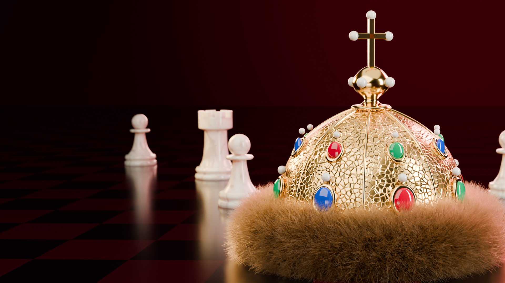
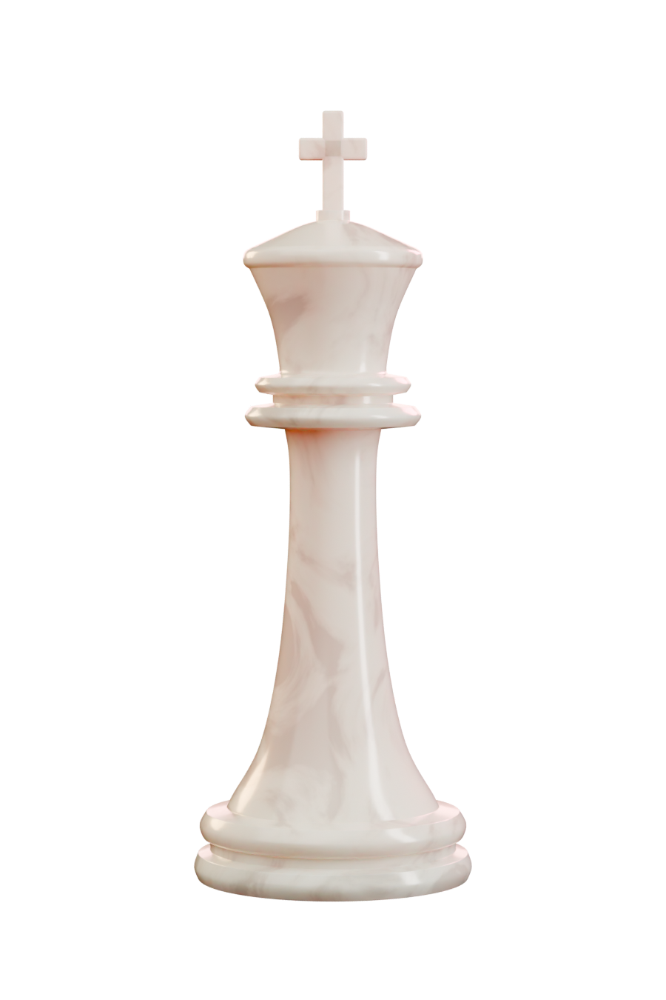

Что это такое — и почему она не закрепилась в России
Форма правления, при которой монарх правит, опираясь на собрание представителей сословий.
Власть государя сочетается с органом, где заседают представители сословий.
Депутаты представляют не народ в целом, а свою группу: духовенство, знать, горожан.
Налоги, война и мир, законы, избрание или утверждение монарха.
Между раздробленностью и абсолютизмом: монарху ещё нужна поддержка «всей земли».
Царь создал группу «Земский собор» · 1549
Нужны деньги на войну. Что думает земля?
Боярская думаПриговорили: воевать.
Освящённый соборБлагословляем.
Посадские людиА можно не с нас?
Спасибо, единогласно!
Царь удалил группу · 1653
Соборы советовали и одобряли — последнее слово оставалось за царём.
Собор был опорой царя — но так и не стал противовесом. Когда опора стала не нужна, её перестали созывать.
Ни сроки созыва, ни состав, ни полномочия не закреплены. Собирает царь — когда сочтёт нужным.
«Регламент? Не, не слышали»Соборы советовали и одобряли, но не могли обязать государя и не контролировали казну.
«Мы посовещались, и царь решил»Посады малочисленны, бедны и зависимы от государства. Сильного «третьего сословия» не возникло.
третье сословие: 404 not foundЗемлю дают за службу царю. Получив в 1649 году крепостное право, дворяне потеряли интерес к соборам.
«Всем спасибо, расходимся»После Смуты династия утвердилась. Приказы, чиновники и полки нового строя заменили «совет всей земли».
царь наконец-то настоящийЦарь — помазанник Божий и хозяин земли. Договора власти с сословиями, как Великая хартия, не было.
«Хартия вольностей? Это другое»
Созывается регулярно, по обычаю и закону
Без согласия парламента налог не ввести
Сильные города и джентри с общими интересами
Договор: Великая хартия вольностей, 1215
Парламент ограничил короля
Созывается по воле царя, без твёрдых правил
Собор лишь одобряет решения о сборах
Слабые посады и служилое дворянство
Служба и верность государю
Соборы исчезли, пришёл абсолютизм
Монархия, в которой государь правит, опираясь на собрание сословий.
В России — Земские соборы, 1549–1653.
Земские соборы помогли государству пережить реформы и Смуту, но не получили собственных прав — и ушли, когда царская власть окрепла.